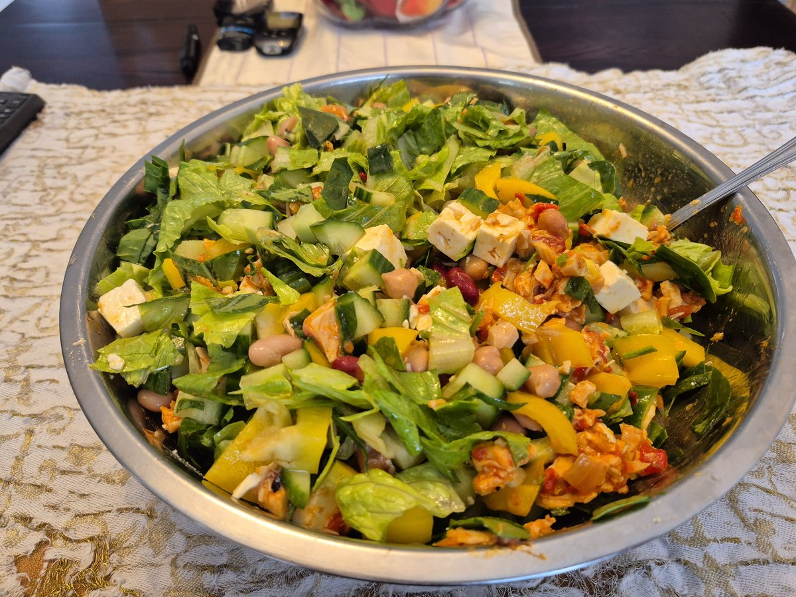
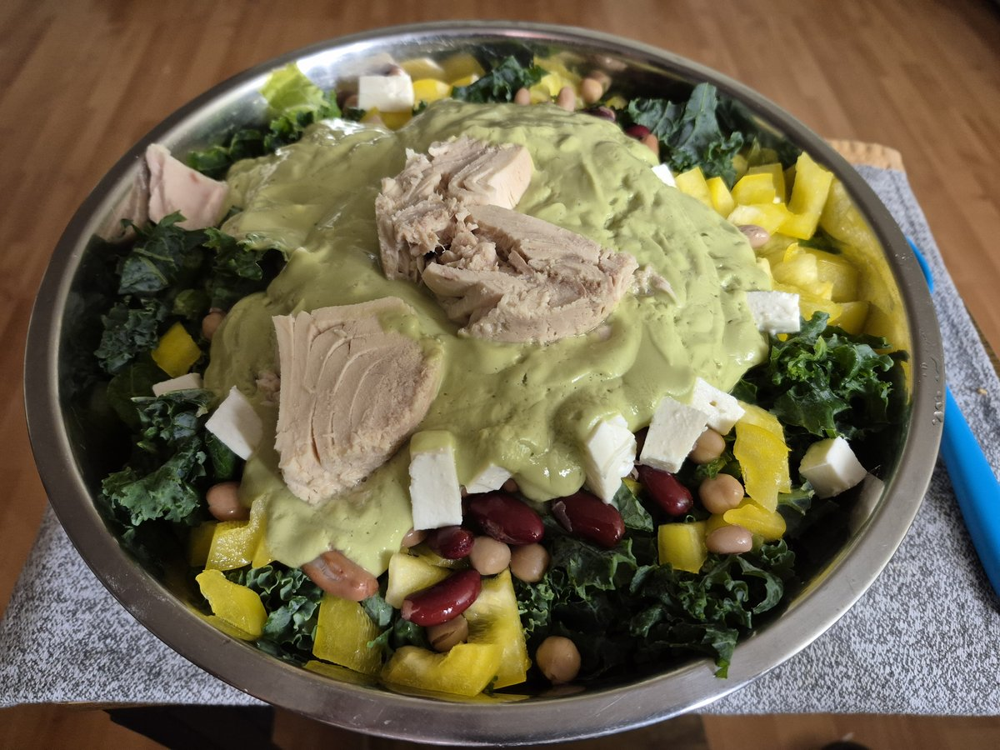

Every meal, every macro, every recipe that fuels the excavation — plus the supplement timeline that runs underneath all of it.
Train like 2, eat for 2. The full macro breakdown is still being built here — the short version, straight from Fit Protocol, is a 252g protein ceiling and a hard 69g fat cap, timed meal by meal, not just totaled at the end of the day.
Five fixed checkpoints from the daily protocol — exactly what gets mixed, when, and the biological reasoning behind the timing. Tap any card to read the full payload breakdown full-size.
Pulled straight from the Platinum Encyclopedia's daily operations schedule — the full 8-phase clock (wake-up through shutdown) lives in Fit Protocol.
Every real recipe, sorted by category — a smoothie row, a wrap row, a meat row — so you can scan straight to what you're hungry for instead of scrolling one long feed. New meals get added into their row as they're posted.

Salad
Salad